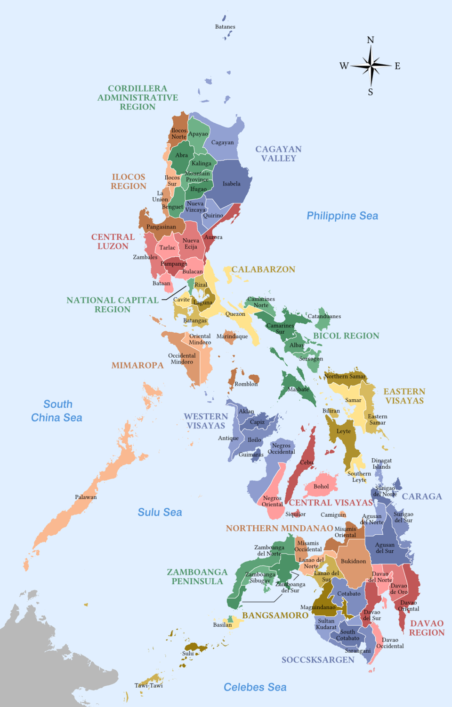

<style>
    .weather-card-gradient {
        background: linear-gradient(to right, #61A356, #8CC63F);
    }
    /* Specific styling for the weather types swiper */
    #weather-page-section #weather-types-swiper-container .swiper-slide {
        width: 100%; /* Default for mobile */
        flex-shrink: 0;
        padding: 0 0.5rem; /* Small padding between the slide content and container edge */
    }
    @media (min-width: 640px) { /* sm breakpoint */
        #weather-page-section #weather-types-swiper-container .swiper-slide {
            width: calc(100% / 2); /* 2 cards per row */
        }
    }
    @media (min-width: 1024px) { /* lg breakpoint */
        #weather-page-section #weather-types-swiper-container .swiper-slide {
            width: calc(100% / 4); /* 4 cards per row */
        }
    }

    /* Styles for individual hourly forecast cards */
    .hourly-card {
        flex-shrink: 0;
        width: 100px; /* Fixed width for hourly cards */
        margin-right: 1rem; /* Gap between cards */
        background-color: rgba(255, 255, 255, 0.2); /* White with opacity */
        border-radius: 0.75rem; /* rounded-xl */
        padding: 0.75rem; /* p-3 */
        display: flex;
        flex-direction: column;
        align-items: center;
        justify-content: center;
        box-shadow: 0 1px 2px 0 rgba(0, 0, 0, 0.05); /* shadow-sm */
    }
    /* Hide scrollbar for the hourly forecast scroll area */
    #hourly-forecast-scroll-area::-webkit-scrollbar {
        display: none;
    }
    #hourly-forecast-scroll-area {
        -ms-overflow-style: none;  /* IE and Edge */
        scrollbar-width: none;  /* Firefox */
    }
</style>
<section id="weather-page-section" class="page-section">
    <header id="weather-banner" class="weather-banner text-white py-20 px-4 md:px-8 flex items-center justify-between relative overflow-hidden pt-20">
        <div class="absolute inset-0 bg-black opacity-30"></div>
        <div class="z-10 flex flex-col md:flex-row items-center md:items-start w-full">
            <div class="text-center md:text-left md:w-1/2">
                <h1 class="text-4xl md:text-5xl font-bold leading-tight mb-4">
                    Your Local Weather Forecast
                </h1>
                <p class="text-lg md:text-xl max-w-md">
                    Stay updated with real-time weather conditions for optimal farming.
                </p>
            </div>
            <div class="md:w-1/2 flex justify-center md:justify-end mt-8 md:mt-0">
                <i class="fas fa-cloud-sun text-9xl"></i>
            </div>
        </div>
    </header>

    <main class="w-full max-w-7xl mx-auto py-8 px-4 space-y-12">
        <!-- Map Section -->
        <section class="bg-white rounded-3xl shadow-lg p-6 md:p-8">
            <div class="relative w-full h-64 bg-gray-200 rounded-2xl overflow-hidden mb-4">
                <!-- Placeholder for map image -->
                
                <div class="absolute top-4 left-4 right-4 bg-white rounded-full p-2 flex items-center shadow-md">
                    <i class="fas fa-map-marker-alt text-gray-500 ml-3"></i>
                    <input type="text" id="location-input" placeholder="Enter your location..." class="flex-1 px-4 py-2 rounded-full text-gray-800 focus:outline-none">
                </div>
            </div>
            <div class="flex items-center justify-between text-gray-700">
                <p class="text-lg font-semibold flex items-center space-x-2">
                    <i class="fas fa-map-marker-alt text-green-600"></i>
                    <span id="display-location">Manila, Philippines</span> <!-- Static location -->
                </p>
                <p class="text-sm" id="display-date">May 25, 2025</p> <!-- Static date -->
            </div>
        </section>

        <!-- Weather Today Section -->
        <section class="weather-card-gradient rounded-3xl shadow-lg p-6 md:p-8 text-white">
            <div class="flex flex-col md:flex-row justify-between items-center mb-6">
                <h2 class="text-3xl font-bold">Weather Today:</h2>
                <div class="flex space-x-2 mt-4 md:mt-0">
                    <button class="bg-white text-green-700 font-bold px-4 py-2 rounded-full shadow-md transition-colors duration-300 hover:bg-gray-100">TODAY</button>
                    <button class="bg-green-600 text-white font-bold px-4 py-2 rounded-full shadow-md transition-colors duration-300 hover:bg-green-700">TOMORROW</button>
                </div>
            </div>
            <!-- Main flex container for the current weather card and the hourly forecast -->
            <div class="flex flex-nowrap items-center space-x-4 pb-4">
                <!-- Current Weather Card - Always visible, flex-shrink-0 ensures it stays -->
                <div class="flex-shrink-0 w-[120px] bg-white bg-opacity-20 rounded-xl p-4 flex flex-col items-center justify-center shadow-md">
                    <i class="fas fa-sun text-4xl mb-2"></i>
                    <p class="text-lg font-semibold">SUNNY</p>
                    <p class="text-sm">28°</p>
                </div>

                <!-- Static Hourly Forecast Cards -->
                <div id="hourly-forecast-scroll-area" class="flex flex-grow overflow-x-auto h-[100px] items-center relative px-10">
                    <div id="hourly-cards-flex-wrapper" class="flex space-x-4">
                        <div class="hourly-card">
                            <p class="text-sm">08:00</p>
                            <i class="fas fa-cloud-sun text-xl my-1"></i>
                            <p class="text-base font-semibold">25°</p>
                        </div>
                        <div class="hourly-card">
                            <p class="text-sm">09:00</p>
                            <i class="fas fa-cloud-sun text-xl my-1"></i>
                            <p class="text-base font-semibold">27°</p>
                        </div>
                        <div class="hourly-card">
                            <p class="text-sm">10:00</p>
                            <i class="fas fa-sun text-xl my-1"></i>
                            <p class="text-base font-semibold">28°</p>
                        </div>
                        <div class="hourly-card">
                            <p class="text-sm">11:00</p>
                            <i class="fas fa-cloud text-xl my-1"></i>
                            <p class="text-base font-semibold">28°</p>
                        </div>
                        <div class="hourly-card">
                            <p class="text-sm">12:00</p>
                            <i class="fas fa-cloud-rain text-xl my-1"></i>
                            <p class="text-base font-semibold">24°</p>
                        </div>
                        <div class="hourly-card">
                            <p class="text-sm">13:00</p>
                            <i class="fas fa-cloud-showers-heavy text-xl my-1"></i>
                            <p class="text-base font-semibold">24°</p>
                        </div>
                        <div class="hourly-card">
                            <p class="text-sm">14:00</p>
                            <i class="fas fa-sun text-xl my-1"></i>
                            <p class="text-base font-semibold">26°</p>
                        </div>
                        <div class="hourly-card">
                            <p class="text-sm">15:00</p>
                            <i class="fas fa-cloud-sun text-xl my-1"></i>
                            <p class="text-base font-semibold">27°</p>
                        </div>
                        <div class="hourly-card">
                            <p class="text-sm">16:00</p>
                            <i class="fas fa-cloud text-xl my-1"></i>
                            <p class="text-base font-semibold">28°</p>
                        </div>
                        <div class="hourly-card">
                            <p class="text-sm">17:00</p>
                            <i class="fas fa-cloud-rain text-xl my-1"></i>
                            <p class="text-base font-semibold">24°</p>
                        </div>
                        <div class="hourly-card">
                            <p class="text-sm">18:00</p>
                            <i class="fas fa-cloud-showers-heavy text-xl my-1"></i>
                            <p class="text-base font-semibold">24°</p>
                        </div>
                    </div>

                    <!-- Navigation Arrows for Hourly Forecast (removed JS functionality) -->
                    <button id="hourly-prev-btn" class="absolute left-0 top-1/2 -translate-y-1/2 bg-white bg-opacity-75 text-green-700 p-2 rounded-full shadow-lg hover:bg-opacity-100 transition-all focus:outline-none disabled:opacity-50 disabled:cursor-not-allowed z-10">
                        <i class="fas fa-chevron-left text-xl"></i>
                    </button>
                    <button id="hourly-next-btn" class="absolute right-0 top-1/2 -translate-y-1/2 bg-white bg-opacity-75 text-green-700 p-2 rounded-full shadow-lg hover:bg-opacity-100 transition-all focus:outline-none disabled:opacity-50 disabled:cursor-not-allowed z-10">
                        <i class="fas fa-chevron-right text-xl"></i>
                    </button>
                </div>
            </div>
        </section>

        <!-- New Weather Station Map Section -->
        <section class="bg-green-100 rounded-3xl p-6 md:p-8 shadow-lg text-center">
            <h2 class="text-3xl font-bold mb-8 text-green-800 flex items-center justify-center space-x-3">
                <i class="fas fa-satellite-dish text-green-700"></i>
                <span>Weather Station Map</span>
            </h2>
            <div class="relative w-full h-64 bg-gray-200 rounded-2xl overflow-hidden mb-4">
                <!-- Placeholder for Weather Station Map image -->
                
            </div>
            <p class="text-gray-700 text-lg">
                View real-time data from weather stations across the region to get precise local conditions.
            </p>
        </section>

        <!-- Weather Types Section - Interactive Swiper -->
        <section class="bg-white rounded-3xl p-6 md:p-8 shadow-lg text-center">
            <h2 class="text-3xl font-bold mb-8 text-green-700">WEATHER TYPES: <br> Explore weather types & forecasts!</h2>
            <div id="weather-types-swiper-container" class="swiper-container relative w-full overflow-hidden">
                <div class="swiper-wrapper flex transition-transform duration-500 ease-in-out" id="weather-swiper-wrapper">
                    <!-- Weather Type Card: Cloudy -->
                    <div class="swiper-slide flex-shrink-0">
                        <div class="flex flex-col items-center p-4 bg-gray-50 rounded-xl shadow-sm border border-gray-200 h-full justify-center">
                            <div class="bg-green-100 rounded-full p-4 mb-3">
                                <i class="fas fa-cloud text-green-600 text-3xl"></i>
                            </div>
                            <h3 class="text-lg font-semibold mb-1">Cloudy</h3>
                            <p class="text-sm text-gray-600">Occasional skies for good seed and light harvest. </p>
                        </div>
                    </div>
                    <!-- Weather Type Card: Sunny -->
                    <div class="swiper-slide flex-shrink-0">
                        <div class="flex flex-col items-center p-4 bg-gray-50 rounded-xl shadow-sm border border-gray-200 h-full justify-center">
                            <div class="bg-green-100 rounded-full p-4 mb-3">
                                <i class="fas fa-sun text-green-600 text-3xl"></i>
                            </div>
                            <h3 class="text-lg font-semibold mb-1">Sunny</h3>
                            <p class="text-sm text-gray-600">Clear skies and calm winds for drying crops or grounds.</p>
                        </div>
                    </div>
                    <!-- Weather Type Card: Rainy -->
                    <div class="swiper-slide flex-shrink-0">
                        <div class="flex flex-col items-center p-4 bg-gray-50 rounded-xl shadow-sm border border-gray-200 h-full justify-center">
                            <div class="bg-green-100 rounded-full p-4 mb-3">
                                <i class="fas fa-cloud-showers-heavy text-green-600 text-3xl"></i>
                            </div>
                            <h3 class="text-lg font-semibold mb-1">Rainy</h3>
                            <p class="text-sm text-gray-600">Wet conditions, perfect for growing crops and restoring grounds.</p>
                        </div>
                    </div>
                    <!-- Weather Type Card: Stormy -->
                    <div class="swiper-slide flex-shrink-0">
                        <div class="flex flex-col items-center p-4 bg-gray-50 rounded-xl shadow-sm border border-gray-200 h-full justify-center">
                            <div class="bg-green-100 rounded-full p-4 mb-3">
                                <i class="fas fa-bolt text-green-600 text-3xl"></i>
                            </div>
                            <h3 class="text-lg font-semibold mb-1">Stormy</h3>
                            <p class="text-sm text-gray-600">Severe conditions, ensure safety and protect farm infrastructure.</p>
                        </div>
                    </div>
                </div>

                <!-- Navigation Arrows for Weather Types Swiper (removed JS functionality) -->
                <button id="weather-prev-weather-type-card" class="absolute left-0 top-1/2 -translate-y-1/2 bg-white bg-opacity-75 text-green-700 p-2 rounded-full shadow-lg hover:bg-opacity-100 transition-all focus:outline-none disabled:opacity-50 disabled:cursor-not-allowed">
                    <i class="fas fa-chevron-left text-xl"></i>
                </button>
                <button id="weather-next-weather-type-card" class="absolute right-0 top-1/2 -translate-y-1/2 bg-white bg-opacity-75 text-green-700 p-2 rounded-full shadow-lg hover:bg-opacity-100 transition-all focus:outline-none disabled:opacity-50 disabled:cursor-not-allowed">
                    <i class="fas fa-chevron-right text-xl"></i>
                </button>
            </div>
        </section>

        <!-- Pest Control Section -->
        <section class="bg-green-100 rounded-3xl p-6 md:p-8 shadow-lg">
            <h2 class="text-3xl font-bold mb-8 text-green-800 flex items-center space-x-3">
                <i class="fas fa-bug text-green-700"></i>
                <span>Pest Control & Warnings</span>
            </h2>
            <div class="grid grid-cols-1 md:grid-cols-2 gap-8">
                <div>
                    <h3 class="text-xl font-bold mb-4 text-gray-800">Common Pests & Solutions:</h3>
                    <ul class="list-disc list-inside text-gray-700 space-y-2 pl-4">
                        <li>
                            <strong class="text-green-700">Aphids:</strong> Small, soft-bodied insects. <br>
                            <span class="text-sm">Solution: Use neem oil, insecticidal soap, or introduce ladybugs.</span>
                        </li>
                        <li>
                            <strong class="text-green-700">Cabbage Worms:</strong> Green caterpillars that chew leaves. <br>
                            <span class="text-sm">Solution: Hand-pick, use Bacillus thuringiensis (Bt), or cover with netting.</span>
                        </li>
                        <li>
                            <strong class="text-green-700">Fruit Flies:</strong> Attracted to ripe fruits. <br>
                            <span class="text-sm">Solution: Keep areas clean, use fruit fly traps, or spray with vinegar solution.</span>
                        </li>
                    </ul>
                </div>
                <div>
                    <h3 class="text-xl font-bold mb-4 text-gray-800">Warnings & Damage:</h3>
                    <ul class="list-disc list-inside text-gray-700 space-y-2 pl-4">
                        <li>
                            <strong class="text-red-600">To Crops:</strong> Pests can cause significant yield loss, stunted growth, and spread plant diseases, leading to severe economic impact for farmers.
                        </li>
                        <li>
                            <strong class="text-red-600">To Humans:</strong>
                            <ul class="list-circle list-inside text-sm pl-4">
                                <li>Some pests carry diseases (e.g., mosquitoes - dengue, malaria).</li>
                                <li>Allergic reactions from bites or contact with certain pests.</li>
                                <li>Contamination of food crops, leading to health issues if consumed.</li>
                            </ul>
                        </li>
                    </ul>
                </div>
            </div>
            <p class="text-sm text-gray-600 mt-6 text-center">
                Always consult with local agricultural experts or extension services for specific pest control recommendations tailored to your region and crops.
            </p>
        </section>

        <!-- Daily News Section - Updated to be text-based articles -->
        <section class="bg-white rounded-3xl p-6 md:p-8 shadow-lg">
            <h2 class="text-3xl font-bold mb-8 text-green-700 flex items-center space-x-3">
                <i class="fas fa-newspaper text-green-600"></i>
                <span>Daily News Articles</span>
             </h2>
            <div class="space-y-6">
                <!-- Article 1 -->
                <div class="p-4 bg-gray-50 rounded-xl shadow-sm border border-gray-200 transition-all duration-300 ease-in-out hover:shadow-lg hover:scale-[1.02] cursor-pointer">
                    <h3 class="text-lg font-semibold text-gray-800 mb-2">SPECIAL WEATHER OUTLOOK FOR INDEPENDENCE DAY 2025 - 10 June 2025</h3>
                    <p class="text-sm text-gray-600 mb-3">The weather system expected to affect the country on Independence Day is the Southwest Monsoon...</p>
                    <a href="https://www.pagasa.dost.gov.ph/article/182" target="_blank" class="text-green-600 text-sm font-medium hover:underline">Read More <i class="fas fa-external-link-alt ml-1 text-xs"></i></a>
                </div>
                <!-- Article 2 -->
                <div class="p-4 bg-gray-50 rounded-xl shadow-sm border border-gray-200 transition-all duration-300 ease-in-out hover:shadow-lg hover:scale-[1.02] cursor-pointer">
                    <h3 class="text-lg font-semibold text-gray-800 mb-2">SPECIAL WEATHER OUTLOOK FOR 2025 NATIONAL AND LOCAL ELECTIONS - 09 May 2025</h3>
                    <p class="text-sm text-gray-600 mb-3">The Frontal System and the Easterlies will be the dominant weather systems affecting the country on Election Day (May 12)...</p>
                    <a href="https://www.pagasa.dost.gov.ph/article/178" target="_blank" class="text-green-600 text-sm font-medium hover:underline">Read More <i class="fas fa-external-link-alt ml-1 text-xs"></i></a>
                </div>
                <!-- Article 3 -->
                <div class="p-4 bg-gray-50 rounded-xl shadow-sm border border-gray-200 transition-all duration-300 ease-in-out hover:shadow-lg hover:scale-[1.02] cursor-pointer">
                    <h3 class="text-lg font-semibold text-gray-800 mb-2">SPECIAL WEATHER OUTLOOK ON LABOR DAY 2025 - 30 April 2025</h3>
                    <p class="text-sm text-gray-600 mb-3">The Intertropical Convergence Zone (ITCZ) and the Easterlies will be the dominant weather systems affecting the country on Labor Day....</p>
                    <a href="https://www.pagasa.dost.gov.ph/article/177" target="_blank" class="text-green-600 text-sm font-medium hover:underline">Read More <i class="fas fa-external-link-alt ml-1 text-xs"></i></a>
                </div>
            </div>
            <button class="bg-green-600 hover:bg-green-700 text-white font-bold py-3 px-8 rounded-full shadow-lg transition duration-300 ease-in-out transform hover:scale-105 mt-8" onclick="console.log('VIEW ALL NEWS clicked!')">
                VIEW ALL
            </button>
        </section>
    </main>
</section>

<script>
    // Weather Page Specific Logic
    document.addEventListener('DOMContentLoaded', () => {
        // Function to initialize swiper for Weather page
        function initWeatherSwiper() {
            const weatherTypesSwiperContainer = document.getElementById('weather-types-swiper-container');
            if (weatherTypesSwiperContainer) {
                const weatherTypesSwiperWrapper = weatherTypesSwiperContainer.querySelector('.swiper-wrapper');
                const weatherTypesSlides = weatherTypesSwiperWrapper.querySelectorAll('.swiper-slide');
                const prevWeatherTypeBtn = document.getElementById('weather-prev-weather-type-card');
                const nextWeatherTypeBtn = document.getElementById('weather-next-weather-type-card');
                let currentWeatherTypeSlide = 0;

                function updateWeatherTypesSwiper() {
                    let slidesInView = 1;
                    if (window.innerWidth >= 640) slidesInView = 2;
                    if (window.innerWidth >= 1024) slidesInView = 4;

                    const slideWidth = weatherTypesSwiperContainer.offsetWidth / slidesInView;
                    weatherTypesSwiperWrapper.style.transform = `translateX(-${currentWeatherTypeSlide * slideWidth}px)`;

                    prevWeatherTypeBtn.disabled = currentWeatherTypeSlide === 0;
                    nextWeatherTypeBtn.disabled = currentWeatherTypeSlide >= (weatherTypesSlides.length - slidesInView);
                }

                if (prevWeatherTypeBtn) prevWeatherTypeBtn.addEventListener('click', () => {
                    if (currentWeatherTypeSlide > 0) {
                        currentWeatherTypeSlide--;
                        updateWeatherTypesSwiper();
                    }
                });
                if (nextWeatherTypeBtn) nextWeatherTypeBtn.addEventListener('click', () => {
                    const slidesInView = (window.innerWidth >= 1024) ? 4 : (window.innerWidth >= 640) ? 2 : 1;
                    if (currentWeatherTypeSlide < (weatherTypesSlides.length - slidesInView)) {
                        currentWeatherTypeSlide++;
                        updateWeatherTypesSwiper();
                    }
                });
                window.addEventListener('resize', updateWeatherTypesSwiper);
                updateWeatherTypesSwiper(); // Initialize
            }
        }

        // Call initialization function when the page is loaded/active
        initWeatherSwiper();
    });
</script>
